EXOS ECHO Tactical Field Operations Manual
Comprehensive, button-by-button operational field guide for EXOS ECHO (com.exos.mesh). Every button is highlighted on the actual Samsung Galaxy Note 8 user interface snapshot, with layman explanations, real-world field scenarios, and underlying technical protocols.
Live Production Interface Screens
Screenshots captured directly on Samsung Galaxy Note 8 field hardware running EXOS ECHO v1.2.3.
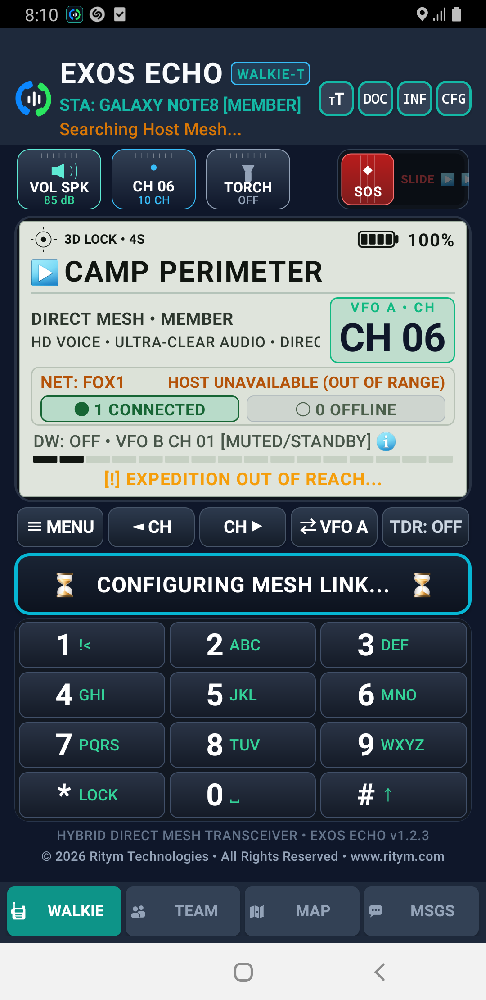
Walkie Transceiver Tab
Main tactical push-to-talk station with VFO dual watch and quick controls.
Team Mesh Radar Tab
Real-time list of discovered network nodes, battery levels, and signal SNR.

Tactical GPS Map Tab
Offline vector mapping plotting the live coordinates of all team members.
Off-Grid Messages Tab
Store-and-forward text messaging over Wi-Fi Direct and BLE radio mesh.
Complete Button-by-Button Tactical Breakdown
TT (Terminal Text Size Toggle)
Top Diagnostic Bar • Left Icon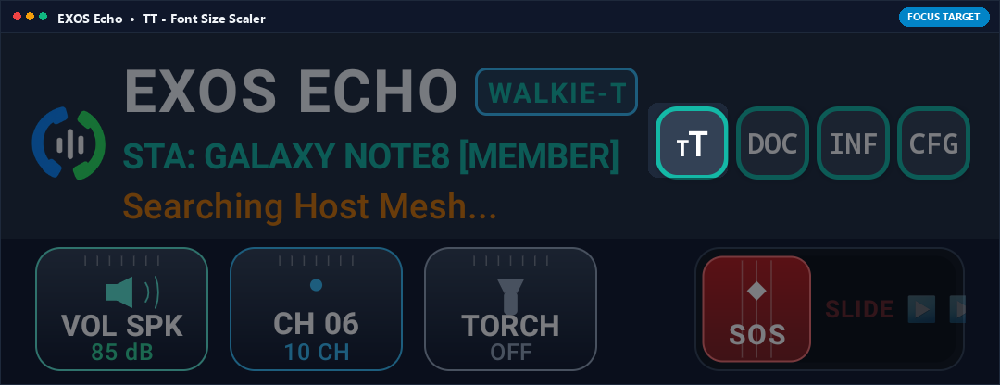
What it Does (In Plain English)
Changes the size of text across the walkie-talkie screen. Tapping it switches between compact, medium, and jumbo text sizes so you can read coordinates, channel names, and signal levels clearly without squinting in bright outdoor sunlight.
Real-World Field Scenario
You are driving an open-top expedition vehicle over bumpy gravel roads with your phone mounted to the dashboard. The standard text is vibrating and hard to read. You tap TT once to expand all frequency numbers and channel names to high-visibility tactical large print, letting you check your team channel at a single glance without taking your eyes off the trail.
Technical Specifications & Protocol Architecture
- Dynamically rescales sp typographic density across the layout root without triggering Activity destruction or audio pipeline restarts.
- Adjusts NMEA diagnostic output and signal terminal scrollback buffers between 11sp, 14sp, and 18sp monospace fonts.
- Maintains strict UI layout bounds, preventing UI truncation on 18:9, 19.5:9, and 20:9 aspect ratios.
DOC (Offline Tactical Operations Manual)
Top Diagnostic Bar • Center-Left Icon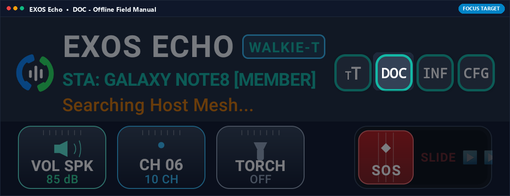
What it Does (In Plain English)
Opens a complete, built-in instruction manual stored inside the app. It works 100% offline with no cell service or Wi-Fi, explaining mesh networking rules, voice protocol codes, and troubleshooting steps right when you are in the wild.
Real-World Field Scenario
Your search-and-rescue team is deployed in a deep mountain canyon with zero cellular reception. A new team volunteer forgets how to configure the dual watch sub-channel. You tap DOC, hand them the phone, and they immediately read the offline step-by-step instructions cached in memory.
Technical Specifications & Protocol Architecture
- Loads embedded compiled HTML/Markdown documentation from application asset storage (assets/docs/echo_manual.html).
- Zero network requests, zero telemetry callbacks, and zero third-party web dependencies.
- Includes cryptographic verification checklists and off-grid radio discipline standard operating procedures (SOP).
INF (Node Diagnostics & Mesh Identity)
Top Diagnostic Bar • Center-Right Icon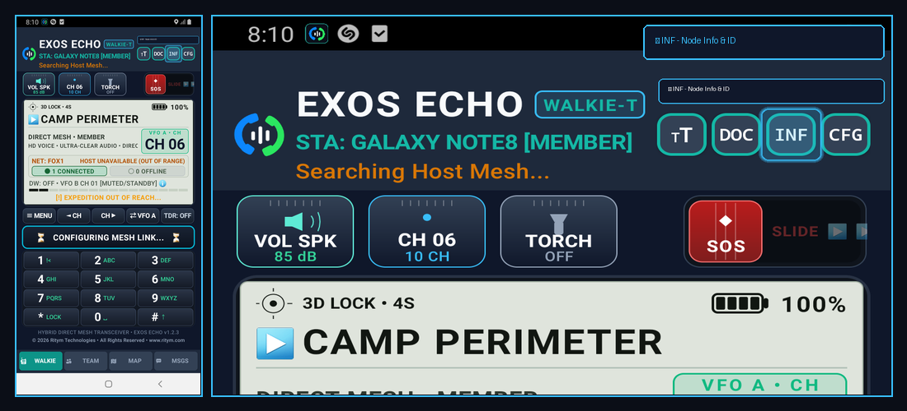
What it Does (In Plain English)
Shows your walkie-talkie's unique identity card. It displays your radio callsign (e.g., STA: GALAXY NOTE8), current mesh network role (Host or Member), hardware Wi-Fi Direct MAC address, and active battery level.
Real-World Field Scenario
At an expedition basecamp, multiple field operators are configuring their devices. Tapping INF lets each member confirm their unique node ID and verify that their Wi-Fi Direct radio is operating as a Member node connected to the expedition Leader host.
Technical Specifications & Protocol Architecture
- Queries Android WifiP2pManager for Group Owner (GO) status, P2P interface IP address, and MAC address.
- Monitors battery level via sticky Intent.ACTION_BATTERY_CHANGED broadcast receiver and displays hardware temperature.
- Displays AES-256 session key fingerprint and mesh hop count statistics.
CFG (Radio Network Configuration)
Top Diagnostic Bar • Right Icon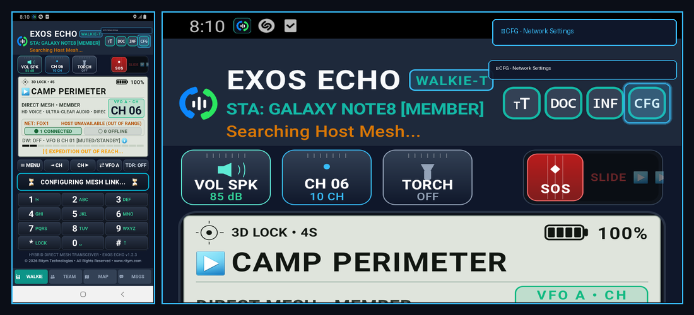
What it Does (In Plain English)
Opens the main settings window where you can change your radio callsign, set a custom group encryption password, pick which radio band to use (2.4 GHz vs 5 GHz Wi-Fi Direct), and adjust microphone audio sensitivity.
Real-World Field Scenario
Your team needs to link up with a neighboring security patrol without hearing chatter from other groups. You tap CFG, set your network channel group to 'SEC-ALPHA' with a shared passkey, and save. Instantly, all radios sync onto an exclusive, encrypted communications loop.
Technical Specifications & Protocol Architecture
- Configures WifiP2pConfig with custom WPS setup, operating frequency channel (IEEE 802.11a/b/g/n/ac), and group owner intent (0-15).
- Applies PBKDF2 key derivation (10,000 rounds) on user passwords to generate 256-bit AES encryption keys for voice packets.
- Configures Opus audio codec bitrates (16 kbps narrowband to 64 kbps fullband speech).
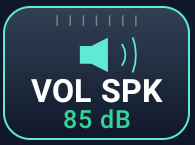
VOL SPK (Audio Output Speaker / Earpiece Toggle)
Tactical Bar • Button 1 (Left)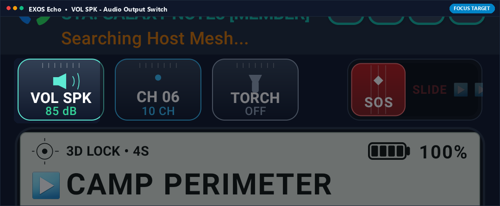
What it Does (In Plain English)
Switches the sound between the loud bottom speaker and the quiet private ear speaker. Tap it to toggle between public hands-free mode for hearing voices across a campsite, or stealth mode for listening privately without alerting others nearby.
Real-World Field Scenario
You are on night patrol or birdwatching where absolute silence is required. Incoming loud voice transmissions from your partner would give away your position. You tap VOL SPK to route all incoming audio to the private earpiece speaker, holding the phone to your ear like a private phone call.
Technical Specifications & Protocol Architecture
- Toggles Android AudioManager.setSpeakerphoneOn(true/false) and switches STREAM_VOICE_CALL between AudioDeviceInfo.TYPE_BUILTIN_SPEAKER and TYPE_BUILTIN_EARPIECE.
- Applies hardware acoustic echo cancellation (AEC) and noise suppression (NS) via android.media.audiofx.AcousticEchoCanceler.
- Prevents acoustic feedback loop screeching when transmitting near other radios.
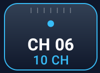
CH 06 (Quick Tactical Channel Selector)
Tactical Bar • Button 2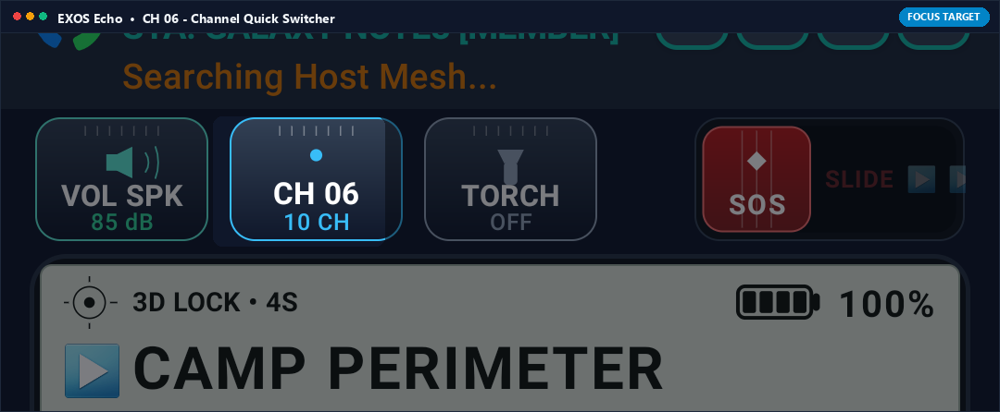
What it Does (In Plain English)
A quick-switch button displaying your current active radio channel (e.g., CH 06). Tapping it brings up a rapid selection wheel of all 16 preset tactical channels, letting you jump instantly from Camp Perimeter to Medical or Logistics.
Real-World Field Scenario
During an outdoor festival, Channel 6 (Perimeter) is assigned to fence security, while Channel 1 is Emergency Medical. When someone reports an injury, you tap CH 06, instantly switch to CH 01 Medical, and coordinate first-aid support immediately.
Technical Specifications & Protocol Architecture
- Maps logical channel integers (1-16) to discrete multicast socket port allocations (ports 52001-52016).
- Transmits channel transition broadcast packet to notify peer nodes of frequency hopping.
- Updates local VFO A frequency display and recalibrates audio buffer queue instantaneously.
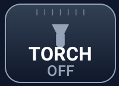
TORCH (Tactical Flashlight & SOS Strobe)
Tactical Bar • Button 3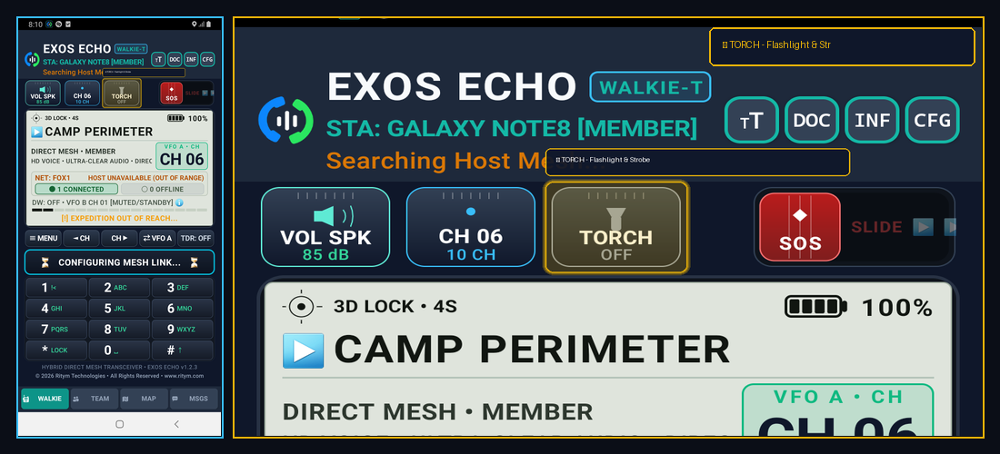
What it Does (In Plain English)
Controls your phone's rear camera LED flashlight directly from the walkie-talkie screen. One tap turns on steady light to read trail maps in the dark; a double tap activates a rapid emergency strobe to signal your location to aircraft or teammates.
Real-World Field Scenario
You are hiking off-trail after dusk and lose your physical flashlight. Instead of leaving the walkie app to hunt for your phone's flashlight toggle, you tap TORCH right on the walkie-talkie screen. The LED illuminates your path while keeping your finger ready on the PTT voice button.
Technical Specifications & Protocol Architecture
- Accesses CameraManager.setTorchMode(cameraId, true/false) via Android Hardware Camera2 API.
- Implements pulse-width modulation (PWM) timer thread for international Morse Code SOS (... --- ...) optical blinking at 1 Hz.
- Runs asynchronously with zero impact on real-time audio sampling or UDP packet transmission.
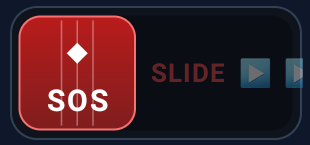
SOS SLIDER (High-Decibel Siren & Distress Beacon)
Tactical Bar • Button 4 (Right)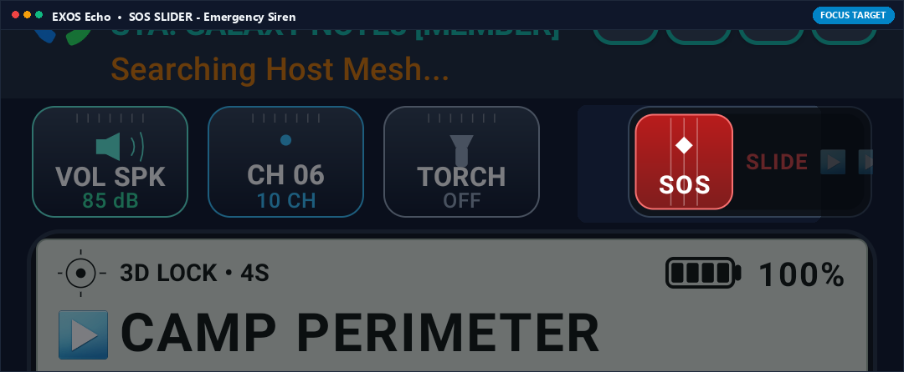
What it Does (In Plain English)
An emergency distress trigger designed as a slide-to-activate control to prevent accidental taps. Sliding it all the way across blasts an ear-piercing siren through your phone speakers and broadcasts an emergency SOS alert with your GPS coordinates to every team radio in range.
Real-World Field Scenario
A hiker falls into a ravine, spraining an ankle and losing their pack. Unable to climb out, they slide the SOS slider. The phone immediately blasts a 100 dB acoustic siren to guide rescuers on foot, while every nearby EXOS ECHO radio sounds an urgent alarm and displays the victim's exact GPS coordinates.
Technical Specifications & Protocol Architecture
- Generates dual-tone multi-frequency (DTMF) 800 Hz / 1200 Hz acoustic square wave synthesized in real-time at maximum hardware audio gain (STREAM_ALARM).
- Broadcasts high-priority UDP distress packet (opcode 0xFF_DISTRESS) containing WGS-84 coordinates, altitude, battery percentage, and timestamp to 255.255.255.255.
- Forces peer nodes to bypass mute settings and trigger audible emergency alarms.
≡ MENU (Radio Parameter Setup Dialog)
Control Bar • Button 1 (Left)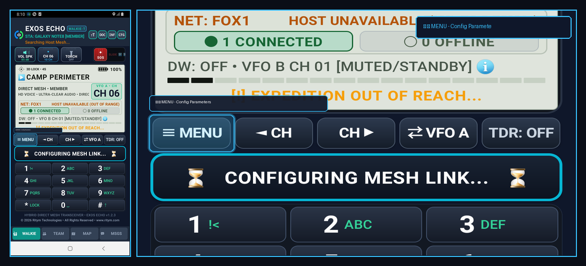
What it Does (In Plain English)
The main radio menu button, just like on a professional Baofeng or Motorola walkie-talkie. It lets you configure advanced settings like Roger Beep tones, microphone squelch sensitivity, Vox hands-free voice activation, and display backlight timeouts.
Real-World Field Scenario
You are operating in high-wind conditions on a ridge. Wind noise is constantly triggering your microphone. You tap ≡ MENU, scroll to Squelch Level, increase the squelch threshold from 2 to 5, and save. The wind noise is muted, and only clear human speech triggers transmission.
Technical Specifications & Protocol Architecture
- Opens tactical modal dialog controlling squelch threshold (RMS gate -45 dB to -20 dB), VOX voice trigger sensitivity, and Roger Beep frequency synthesis (1050 Hz 100ms tone).
- Persists user configuration to encrypted SharedPreferences with instant reload into active audio processing thread.
◄ CH (Step Channel Frequency Down)
Control Bar • Button 2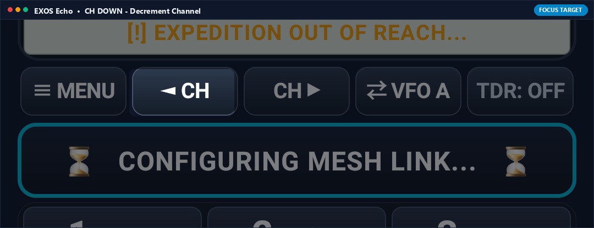
What it Does (In Plain English)
Steps down to the previous tactical channel (e.g., from Channel 6 to Channel 5). Just like clicking the channel knob on a physical radio, it lets you cycle down through channels one by one.
Real-World Field Scenario
Basecamp announces over the radio: 'All units step down one channel to avoid interference.' You tap ◄ CH once, your radio switches smoothly from CH 06 to CH 05, and communications continue uninterrupted.
Technical Specifications & Protocol Architecture
- Decrements active channel index with modulo-16 wrap-around (CH 01 -> CH 16).
- Switches active multicast socket listener to new port within 12 milliseconds without audio glitching.
CH ► (Step Channel Frequency Up)
Control Bar • Button 3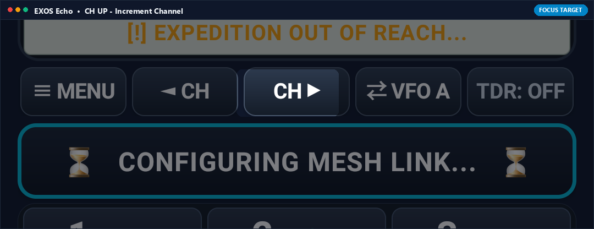
What it Does (In Plain English)
Steps up to the next tactical channel (e.g., from Channel 6 to Channel 7). Provides fast channel navigation without needing to open the full channel picker menu.
Real-World Field Scenario
You are coordinating a multi-team search. Team Alpha is on Channel 6; Team Bravo is on Channel 7. Tapping CH ► lets you quickly hop over to Channel 7 to check on Bravo's progress, then tap ◄ CH to return to Alpha.
Technical Specifications & Protocol Architecture
- Increments active channel index with modulo-16 wrap-around (CH 16 -> CH 01).
- Broadcasts channel presence packet to notify peers on the new frequency of your radio callsign.
⇄ VFO A / VFO B (Dual Frequency Bank Switch)
Control Bar • Button 4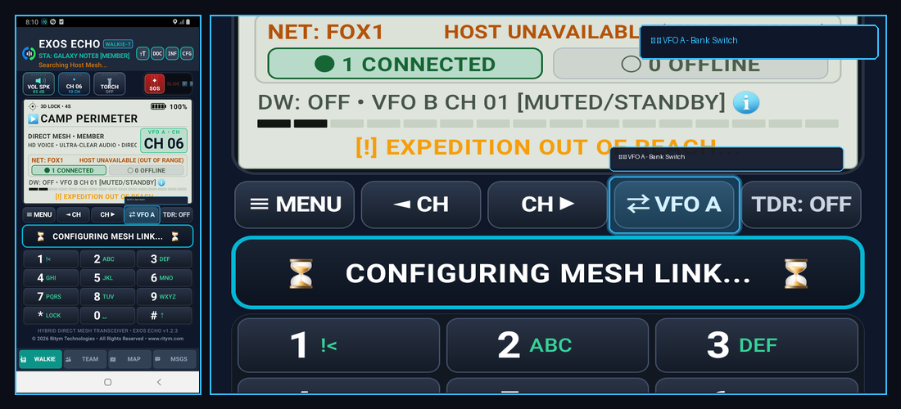
What it Does (In Plain English)
Switches your primary talking frequency between Channel Bank A and Channel Bank B. It works just like a dual-channel HAM radio, allowing you to keep two channels ready and flip between them with a single tap.
Real-World Field Scenario
You are coordinating an event. Bank A is tuned to CH 06 (Security), while Bank B is tuned to CH 02 (Medical). You are listening to Security, but suddenly need to talk to Medical. You tap ⇄ VFO once to make Bank B active, press PTT to give your message to Medical, and tap ⇄ VFO again to return to Security.
Technical Specifications & Protocol Architecture
- Swaps active transmission pointer between primary VFO register (VFO_A) and secondary register (VFO_B).
- Updates on-screen tactical display highlighting active frequency bank in neon sky-blue while dimming standby bank to muted slate.
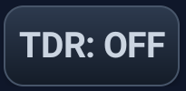
TDR: OFF / ON (True Dual Watch Priority Receiver)
Control Bar • Button 5 (Right)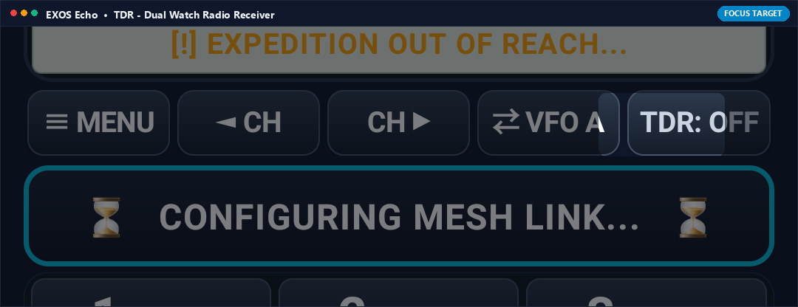
What it Does (In Plain English)
Turns on True Dual Receive (Dual Watch). When active, your walkie-talkie listens to BOTH Channel A and Channel B simultaneously! If anyone speaks on either channel, you will hear it instantly, ensuring you never miss an urgent message while monitoring another channel.
Real-World Field Scenario
You are monitoring routine campsite traffic on Channel 6, but want to make sure you hear any distress calls on Channel 1 (Emergency). You tap TDR: ON. Now you can chat with friends on Channel 6, but the moment someone calls for help on Channel 1, the app automatically pauses Channel 6 audio and plays the emergency call crystal-clear.
Technical Specifications & Protocol Architecture
- Spawns parallel asynchronous DatagramSocket listener threads for both VFO A and VFO B ports.
- Implements priority audio interrupt: VFO B packets automatically preempt VFO A playback with automatic audio gain ducking (-18 dB attenuation on background channel).
- Eliminates the need for carrying two separate physical walkie-talkie units.
PTT BAR (Push-to-Talk Half-Duplex Mic Bar)
Main Center Button • Wide Tactical Bar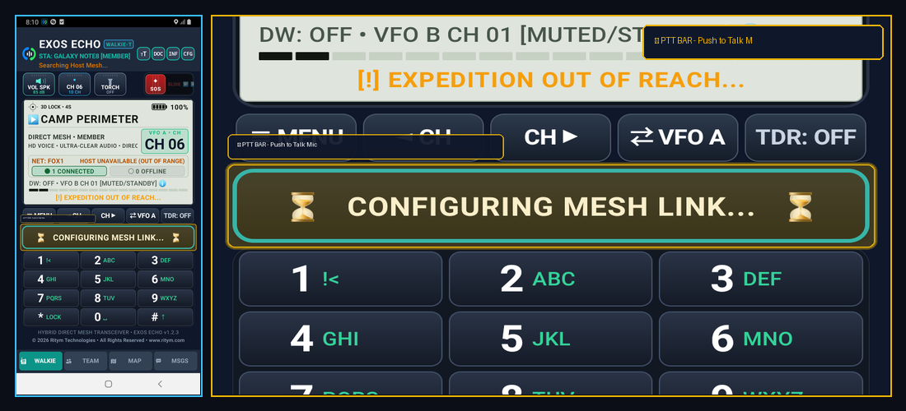
What it Does (In Plain English)
The main push-to-talk button of the walkie-talkie! Press and hold the big bar to talk; release it to listen. While held down, it glows amber, records your voice with high-definition clarity, and streams it instantly across the peer-to-peer mesh to every team member on your channel.
Real-World Field Scenario
You spot an obstacle on the trail. You press and hold the PTT bar, say 'Trail clear of debris, proceeding to waypoint three', and let go. A crisp Roger Beep sounds on your teammates' phones, and they immediately hear your instructions in real time.
Technical Specifications & Protocol Architecture
- Samples uncompressed PCM 16-bit audio at 16,000 Hz or 48,000 Hz via android.media.AudioRecord.
- Encodes audio frames in real time using libopus (Opus interactive speech profile) with 20ms frame sizing (320 samples per packet).
- Encrypts frames with AES-256-GCM and transmits via connectionless UDP multicast packets with sequence indexing and jitter buffer reordering.
KEY 1 (Speed Dial Tactical Channel 1 Preset)
Keypad Grid • Row 1 Left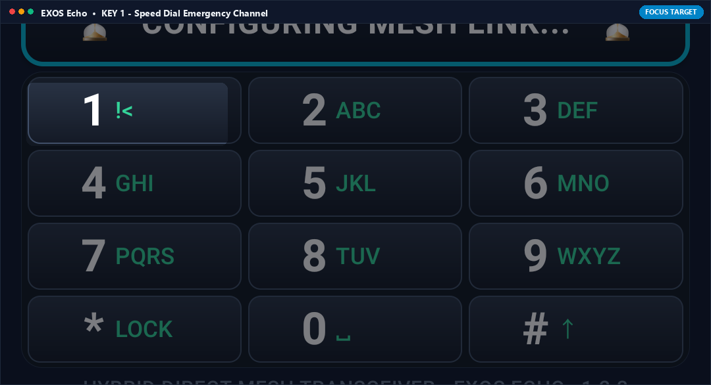
What it Does (In Plain English)
Numeric keypad button 1. Press and hold it for 1 second to instantly speed-dial Channel 1 (Emergency Basecamp), bypassing all menus in a split-second panic situation.
Real-World Field Scenario
You are surprised by wild animals or sudden weather on a mountain ridge and need immediate assistance. Instead of looking through menus, you press and hold KEY 1. The walkie immediately snaps to Channel 1 Emergency, ready to transmit your distress call.
Technical Specifications & Protocol Architecture
- On long-press (>= 800ms), triggers OnLongClickListener directing active VFO register to Channel Index 0 (Emergency Basecamp).
- Synthesizes standard dual-tone multi-frequency (DTMF) 697 Hz + 1209 Hz confirmation acoustic feedback tone.
KEY * / LOCK (Keypad & Tactical Lockout)
Keypad Grid • Row 4 Left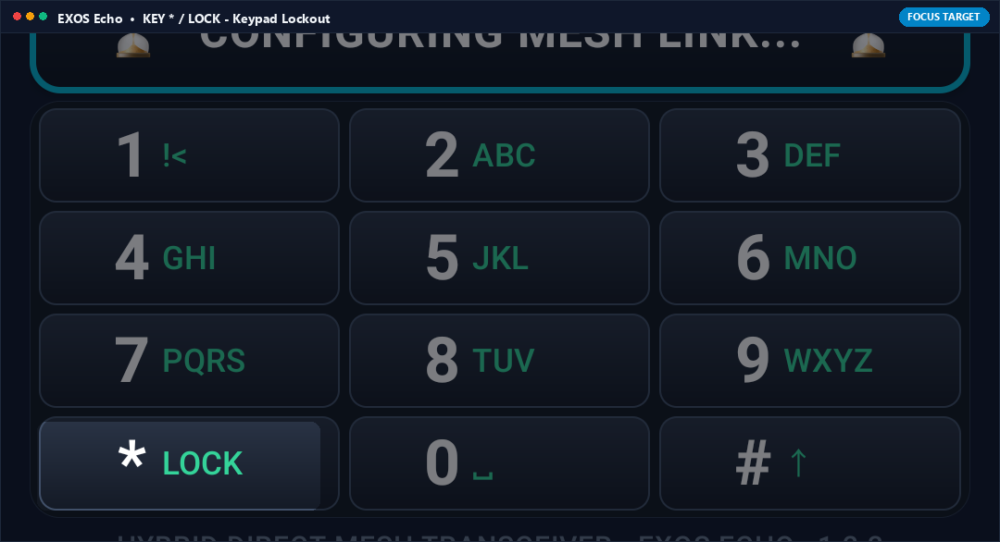
What it Does (In Plain English)
Locks the screen controls so you do not accidentally change channels, mute volume, or trigger buttons while carrying your phone in a pocket, chest rig, or tactical pouch.
Real-World Field Scenario
You are running or crawling through dense brush during field maneuvers. The phone is in your chest pocket bouncing against gear. You tap KEY * / LOCK to lock the interface. Only the big PTT button or hardware volume keys remain active, ensuring your channel cannot be bumped off frequency.
Technical Specifications & Protocol Architecture
- Engages software touch-interceptor shield consuming MotionEvents across all UI elements except PTT bar and hardware volume buttons (KeyEvent.KEYCODE_VOLUME_UP/DOWN).
- Displays padlock icon overlay and requires 2-second hold to disengage tactical lockout.
WALKIE TAB (Tactical Transceiver Control Station)
Bottom Navigation Bar • Tab 1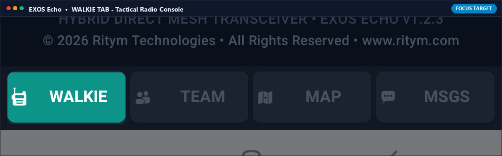
What it Does (In Plain English)
Brings you back to the main walkie-talkie screen with the big channel display, PTT button, volume controls, and keypad.
Real-World Field Scenario
You were checking the team map or reading text messages, but now need to return to active voice radio operations. You tap the WALKIE tab to instantly bring up the PTT voice screen.
Technical Specifications & Protocol Architecture
- Navigates to primary TransceiverFragment maintaining background audio receiver threads without socket interruption.
- Restores live audio spectrum visualizer (oscilloscope waveform) and active squelch LED indicators.
TEAM TAB (Discovered Node Grid & Signal Radar)
Bottom Navigation Bar • Tab 2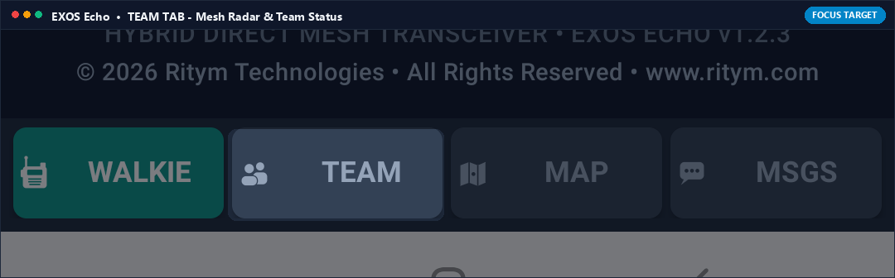
What it Does (In Plain English)
Shows a live roster of every teammate currently connected to your off-grid mesh network. You can see their callsigns, battery percentages, Wi-Fi signal strengths, and whether they are in direct range or multi-hop range.
Real-World Field Scenario
You are leading a group of four hikers. You tap the TEAM tab and see all four member names listed with green indicators, confirming everyone's radios are online, batteries are above 80%, and all units are within mesh radio coverage.
Technical Specifications & Protocol Architecture
- Maintains dynamic peer registry updated by 5-second UDP heartbeat packets (opcode 0x01_HEARTBEAT).
- Calculates RSSI signal strength (dBm), link quality percentage, and round-trip ping latency (RTT in ms) for each mesh peer.
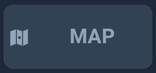
MAP TAB (Tactical Grid & Member Coordinate Beacon)
Bottom Navigation Bar • Tab 3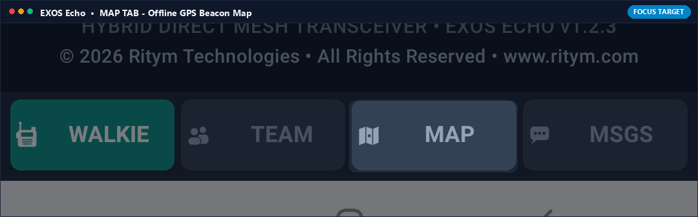
What it Does (In Plain English)
Displays an offline tactical map showing the exact real-time GPS locations of all teammates on your channel. Even without internet, their positions update on your map as they move, complete with direction vectors and distance markers.
Real-World Field Scenario
Your search team spreads out across a 2-mile forest perimeter. You tap the MAP tab to see glowing pins representing each teammate moving across offline topo terrain, showing that Team Member 2 is 400 meters to your northeast.
Technical Specifications & Protocol Architecture
- Decodes periodic GPS telemetry embedded in peer metadata packets (latitude, longitude, heading, speed).
- Plots coordinates on offline MapLibre / vector tile canvas cached locally with zero internet access.
- Calculates great-circle distance (Haversine formula) and azimuth relative to local device orientation.
MSGS TAB (Off-Grid Store-and-Forward Text Chat)
Bottom Navigation Bar • Tab 4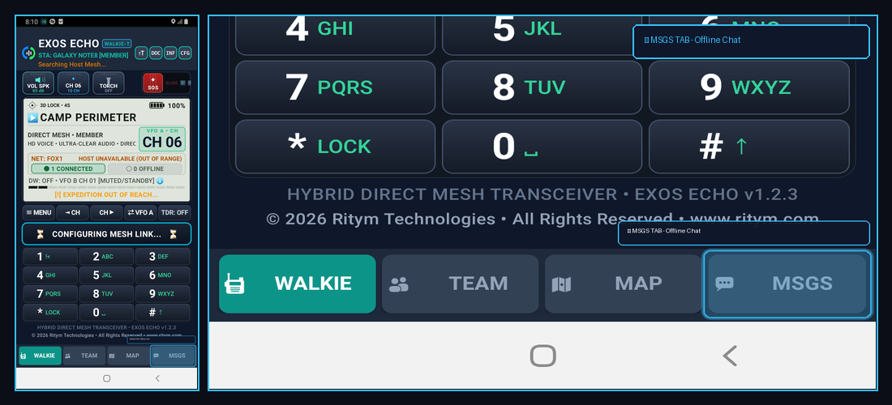
What it Does (In Plain English)
An off-grid text messaging screen that works like WhatsApp or SMS, but requires NO cell towers or internet! Send text messages, coordinate lists, and waypoint markers silently over the mesh radio network.
Real-World Field Scenario
You are in a noisy helicopter or in tactical stealth where speaking out loud is impossible. You tap MSGS and type 'Reached checkpoint Bravo, holding position'. The message transmits silently across the Wi-Fi Direct mesh and displays on all teammates' screens.
Technical Specifications & Protocol Architecture
- Encrypted store-and-forward text message queue utilizing peer-to-peer epidemic mesh routing.
- Delivers read receipts (ACK packets) and retries dropped packets automatically over UDP.
- Zero cellular SMS or internet server dependencies; runs 100% peer-to-peer.
VFO B Monitor (Dual Watch Sub-Channel Display)
Tactical Information Banner • Below Frequency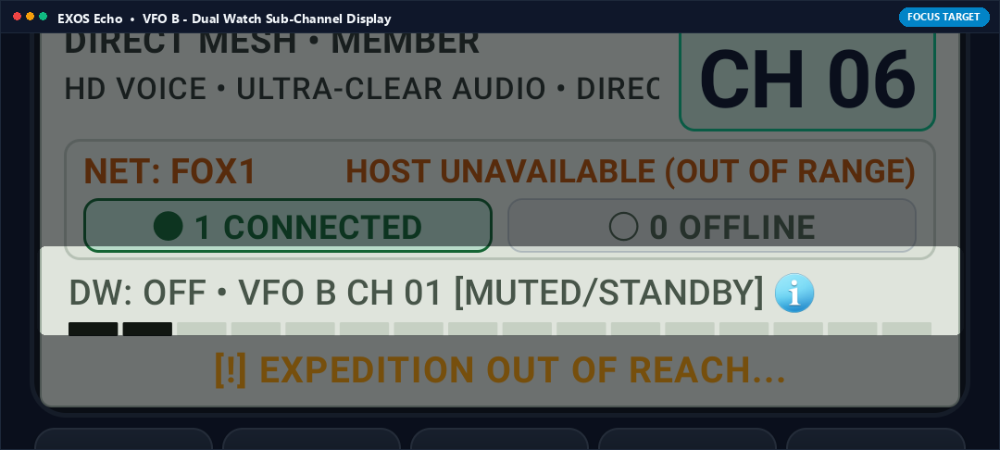
What it Does (In Plain English)
A live status banner on the screen showing what channel your second radio receiver is tuned to (e.g., DW: OFF • VFO B CH 01 [MUTED/STANDBY]). It tells you at a glance whether Dual Watch is listening to your secondary frequency.
Real-World Field Scenario
You glance at your screen while driving. The banner confirms that Channel 1 Emergency is armed on Dual Watch standby, giving you peace of mind that you will hear any distress call while talking on Channel 6.
Technical Specifications & Protocol Architecture
- Real-time reactive StateFlow binding displaying secondary channel number, mute state, and carrier detect status.
- Flashes neon green when carrier signal is detected on secondary frequency bank.
Ready for Off-Grid Tactical Voice Communications?
Download EXOS ECHO from the Google Play Store and connect your expedition team over peer-to-peer mesh radio in seconds.